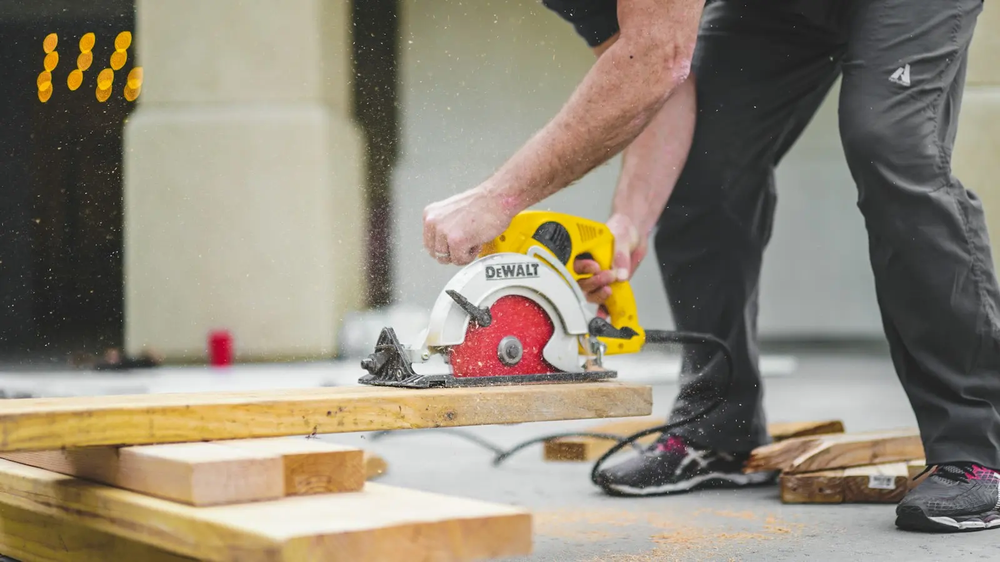

Roofing
Leaks, slipped or broken tiles and other roof problems. Described on his page as part of the general trade work.
WORCESTER & SURROUNDING AREAS
General gardening, painting and decorating, roofing and more, handled by one local tradesman. Send the job on WhatsApp and get a straight answer.
WHAT NIGEL DOES
Services as listed on the public Nextdoor business page. Not on the list? Just ask.
Leaks, slipped or broken tiles and other roof problems. Described on his page as part of the general trade work.
Inside and out, from a single room to the woodwork and tired walls that need a fresh coat.
Tidying and maintaining outdoor space so the garden looks cared for all year.
The repairs and odd jobs that never get done. Neighbours on Nextdoor often ask about guttering, window sills and refreshing tiled areas.

ONE NUMBER FOR EVERYTHING
Roof, paintwork and garden are all covered by one local tradesman, so one message gets the whole list looked at. Photos on this page are illustrative only, not Nigel's own work.
Illustrative photos, see images.md for sources.
KEEPING IT SIMPLE
Tell Nigel what needs doing and where, with a photo if it helps.
He replies about timing and cost. Confirm details with him directly.
The job gets sorted properly and the list gets shorter.
Process shown as a concept. Nigel confirms availability and pricing himself.
FIND HIM ON NEXTDOOR
Nigel's public Nextdoor business page lists the number and email on this site. This sample just gives it a proper home of its own.
View the Nextdoor pageGET A QUOTE
This form writes a WhatsApp message to +44 7704 510798. You check it and press send yourself, nothing is stored or sent from this page.